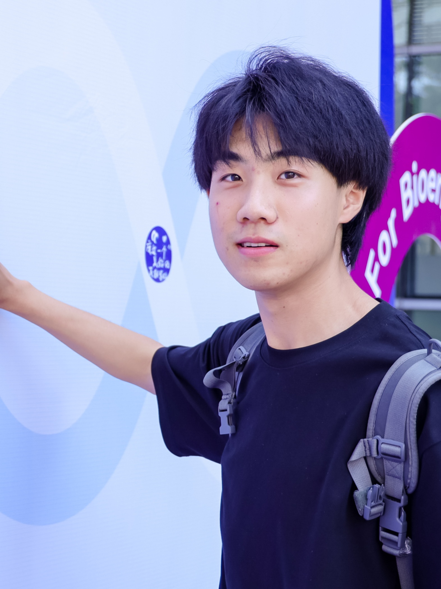
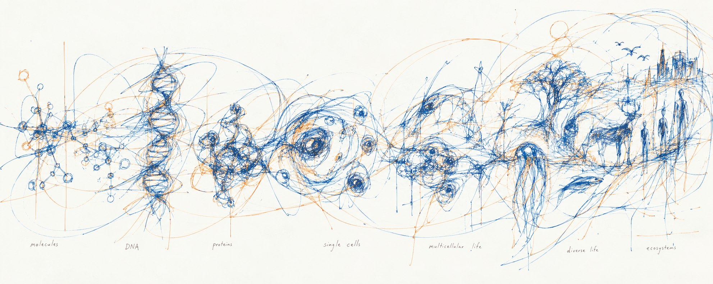
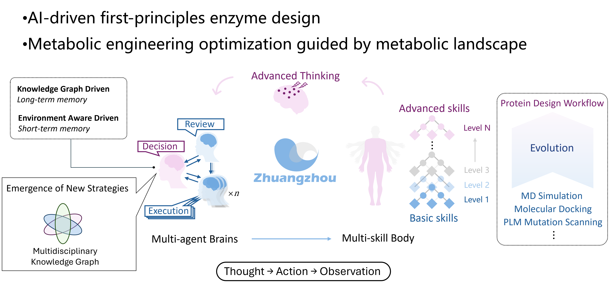
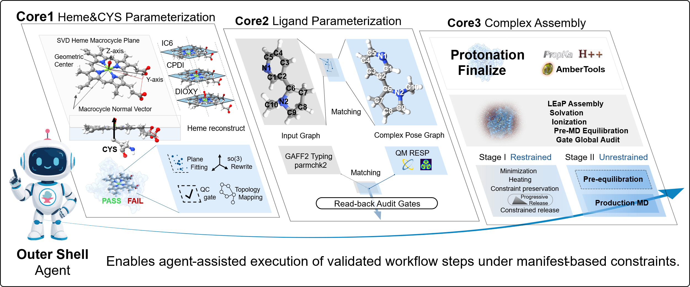
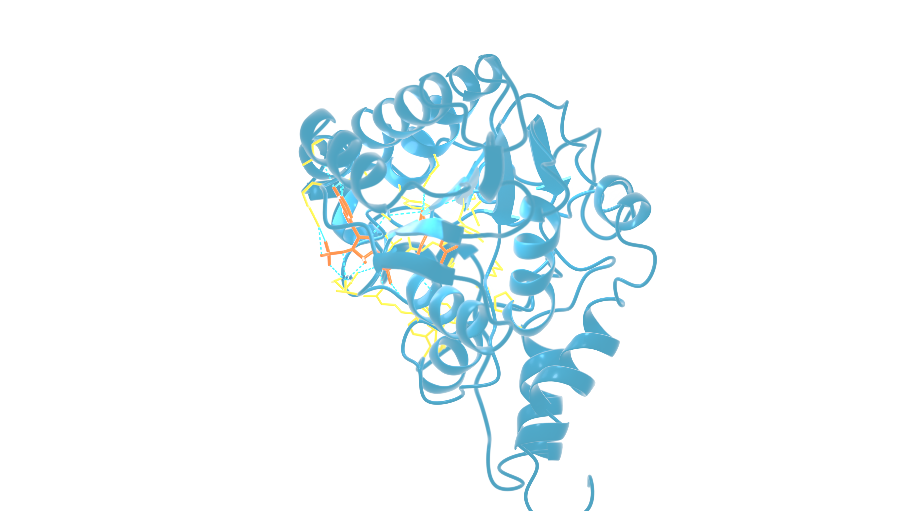
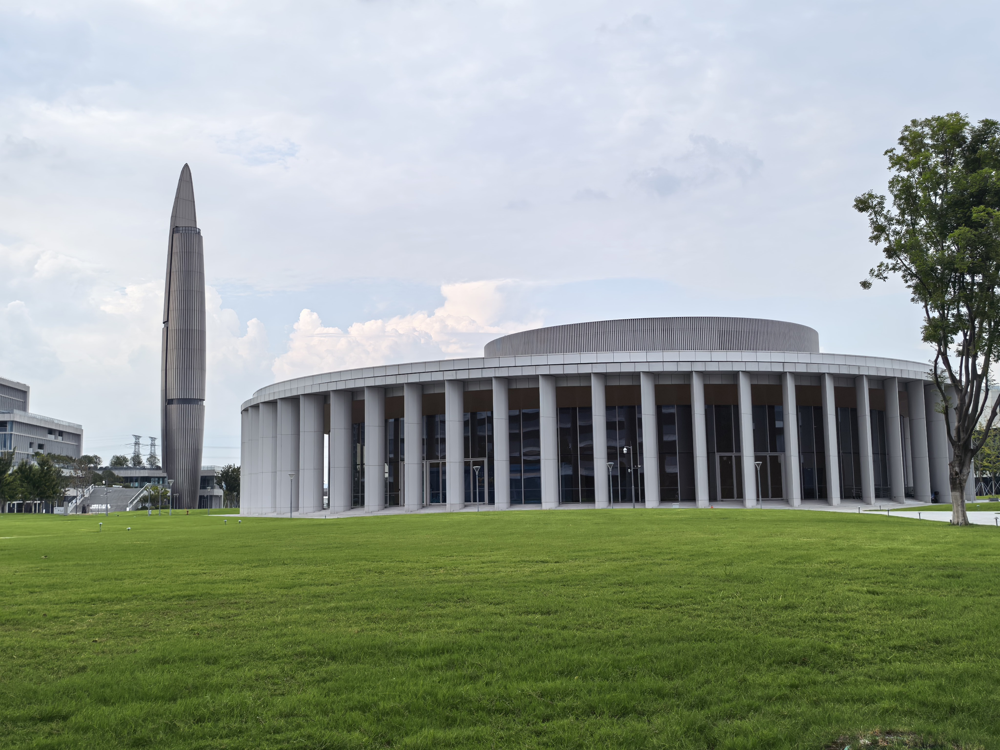
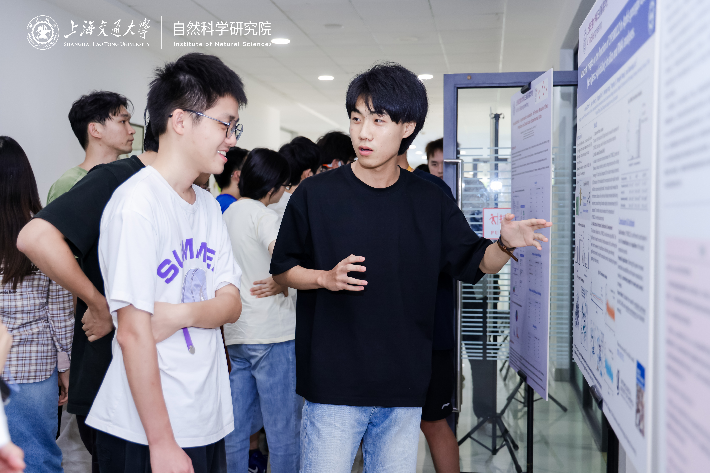
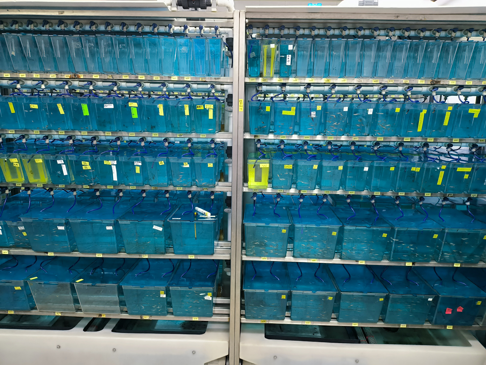

Ziyan Zhuang 「庄子岩」
I am currently a Ph.D. student at Tianjin University (Wikipedia) and a jointly trained Ph.D. student at Shenzhen Loop Area Institute (SLAI). My supervisors are Guangrong Zhao at Tianjin University and Yu Li (CUHK) at Shenzhen Loop Area Institute.
Previously, I received my B.S. in Biological Science from Xinjiang University in June 2026, graduating with a GPA of 4.30 and ranking in the top 1%.
Research Interests: AI for Synthetic Biology, bio-inspired algorithm optimization, multi-scale coupling simulation of large biomolecules (cross-system / cross-method), and trustworthy scientific AI agents.
Email: ziyan@tju.edu.cn / ziyanzhuang@slai.edu.cn
CV / Github / ORCID / Google Scholar


I love biology — more is different.
PKU taught me to see the spatiotemporal complexity emerging from the central dogma and molecular networks; SJTU showed me how AI can map dense, entangled biological signals into higher-dimensional latent spaces to reveal sparse structure. At XJU, Dr. Wen Zhong's developmental biology teaching showed me how nonlinear development makes causal reasoning essential to biological research. These experiences led me to synthetic biology—augmented by AI—as a path to understand, design, and improve living systems. As Feynman said, “What I cannot create, I do not understand.”
In memory of Dr. Wen Zhong, who passed away on 6 March 2026. Rest in peace.
News & Honors
- [06/2026] Graduated with a B.S. in Biological Science from Xinjiang University — Overall GPA 4.30, Rank Top 1%. Thanks XJU & my friends Jiangjun, Xiaowang, 101, Hengsu, Qi-ao, Xilei. Special thanks to Dr. Xie, my senior colleague, for support in my studies and daily life. Finally, special thanks to Prof. Liu for her guidance and mentorship; her integrity and principled character are qualities I deeply respect.
- [03/2026] Gratitude to China's Modern Scientists Scholarship. Selected from 20,000+ undergraduates in Xinjiang University (Top 0.05%, 10 awardees); CNY 20,000. Thanks XJU & SWJTU!
- [12/2025] Was awarded the title of "Xinjiang University 'SanHao' Student". Thanks XJU!
- [08/2025] Attended Summer School at Shanghai Jiao Tong University (AI for Bioengineering), Institute of Natural Sciences. Thanks SJTU!
- [08/2024] Received Second Prize at China Undergraduate Life Sciences Contest (National, TEAM LEADER).
- [08/2024] Received Outstanding Newcomer Award from The Chinese Society of Biochemistry and Molecular Biology.
- [07/2024] Attended Summer School at Peking University (Quantitative Biology), Center for Life Science (CLS). Thanks ♥ PKU
- [2023–2024] Project Leader for National Training Program of Innovation (CNY 20,000 Grant). Thanks XJU!
- [2023–2024] Joint Minor: Climate Change and Carbon Neutrality, College of Environmental Science and Engineering, Tongji University & Xinjiang University. Thanks TJU&XJU!
- [06/2024] Participated in field research (Wildlife Monitoring) in the Northern Tianshan Mountains. Thank you Dr. Zhong.
Selected Publications
* denotes corresponding author.
CYPForge: Auditable Preparation of Cytochrome P450 Molecular Dynamics Systems
Zhuang ZY, Zhao QY, Shao YRS, Zhao GR*, Li Y*, Zhang DC*
ChemRxiv (Preprint), 2026 Preprint
TL;DR: An automated, auditable pipeline that transforms raw PDB/SDF inputs into simulation-ready CYP450 MD systems with gated quality control at every stage.
Paper | Code
Spinetoram resistance in Tuta absoluta: selection, inheritance, biochemical mechanism and fitness cost
Xie JG, Rukiya T, Liu N, Zhuang ZY, Liu XN*, Song Y*.
Pesticide Biochemistry and Physiology, 2025 JCR Q1
TL;DR: Dissected the inheritance mode, biochemical mechanism, and fitness trade-offs of spinetoram resistance in the invasive tomato leafminer.
Paper

Molecular insights on the function of CYP380C12 in Aphis gossypii Glover (Hemiptera: Aphididae): in silico and RNAi analyses
Zhang LJ, Zhuang ZY (Co-first), Xie JG, Kong WT, Li TT, Wang SF, Liu XN*.
Journal of Economic Entomology, 2025 JCR Q1
TL;DR: Combined homology modeling, molecular docking, and RNAi knockdown to reveal CYP380C12's role in cotton aphid detoxification.
Paper

Functional analysis of lactase phlorizin hydrolase in insect-plant coevolution based on deglycosylation
Li Y, Kong WT, Li TT, Zhang LJ, Zhuang ZY, Liu N*, Liu XN*.
Journal of Agricultural and Food Chemistry, Cover Paper, 2025 JCR Q1
TL;DR: Showed that insect lactase phlorizin hydrolase mediates plant-insect coevolution by deglycosylating plant secondary metabolites to release defensive aglycones.
Paper
Exploring the role of CYP6AB328 in spinetoram resistance and growth and development of Phthorimaea absoluta
Xie JG, Wang SY, Zhuang ZY, Wang XH, Lin MH, Liu XN*.
Pesticide Biochemistry and Physiology, 2025 JCR Q1
TL;DR: Showed that CYP6AB328 plays a dual role in both spinetoram detoxification and normal growth and development in the tomato leafminer.
Paper
Functional Investigation of CYP304F1 in Tuta absoluta (Lepidopteran: Gelechiidae) by RNA Interference
Xie JG, Ali A, Li Y, Zhuang ZY, Liu XN*.
Journal of Economic Entomology, 2024 JCR Q1
TL;DR: RNAi-mediated silencing established CYP304F1's functional importance in the tomato leafminer's xenobiotic response and normal physiology.
Paper
Projects & Software

Zhuangzhou (庄周): Autonomous Scientific Agent for Enzyme Design & Metabolic Engineering
Ziyan Zhuang & Qianyu Zhao
GitHub
An autonomous scientific intelligence platform that integrates a cross-disciplinary knowledge graph, a multi-agent reasoning system, and hierarchical scientific skills (protein design, molecular simulation, metabolic network analysis) into a closed Think→Act→Observe→Review→Re-decide loop. It enables cross-scale intelligent bioengineering — from catalytic mechanism reasoning and enzyme active-site design to whole-cell metabolic network optimization.

CYPForge: Auditable Preparation of Cytochrome P450 Molecular Dynamics Systems
Ziyan Zhuang & collaborators
GitHub | Paper
An auditable workflow for preparing CYP450 protein–heme–ligand systems for Amber molecular dynamics, with manifest-based quality gates across parameterization, solvation, and pre-MD preparation.

Biomolecular Visualization Agentic Pipeline
Ziyan Zhuang
GitHub
A reproducible pipeline for protein-structure visualization that separates structural facts, chemical topology, interaction evidence, and Blender rendering.
Field Practice & Academic Programs

Westlake AIVC Week (Westlake University)
August 2026, Hangzhou, China
Participated in Westlake AIVC Week at the Yungu Campus of Westlake University, a flagship international program advancing the AI Virtual Cell (AIVC) vision. Engaged with frontier directions spanning AI virtual cell modeling, multi-omics integration, deep learning foundation models, and AI for Science, gaining insights into how these converging approaches are reshaping biological research toward data-driven simulation of living systems.

Ancient Ginkgo Leaf Collection Volunteer Program (Zhejiang University)
September 2025
Volunteered for Zhejiang University's China Temple Ancient Ginkgo Leaf Collection Initiative, performing standardized sampling of ancient ginkgo trees. Specimen data has been archived in the Zhejiang University Herbarium and incorporated into the GinkgoDB comprehensive ginkgo database, providing important specimens and data for ancient ginkgo germplasm conservation and genetic lineage research.

AI for Bioengineering Summer School (Shanghai Jiao Tong University)
August 2025
Participated in the summer school at the Institute of Natural Sciences, Shanghai Jiao Tong University, focusing on the application of artificial intelligence in bioengineering. Learned cutting-edge techniques including AI-driven protein design and computational biology workflows.

Quantitative Biology Summer School (Peking University)
July 2024
Participated in the summer school at the Center for Life Science (CLS), Peking University, exploring quantitative methods in biological research, including mathematical modeling of biological systems and data-driven experimental design.
Wildlife Monitoring Field Practice (Northern Tianshan Mountains)
June 2024
Ziyan Zhuang, Zifan Zhao, et al.
Participated in field research in the Northern Tianshan Mountains, using infrared camera technology to record and analyze the behavior and distribution of local wild animals. The visual above shows representative footage captured during the internship.